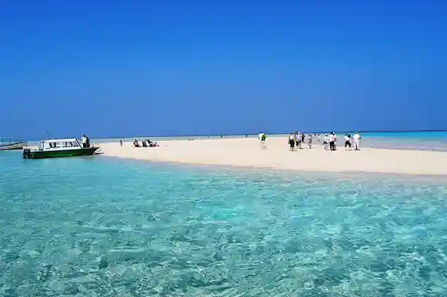
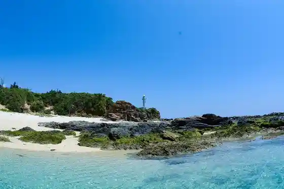
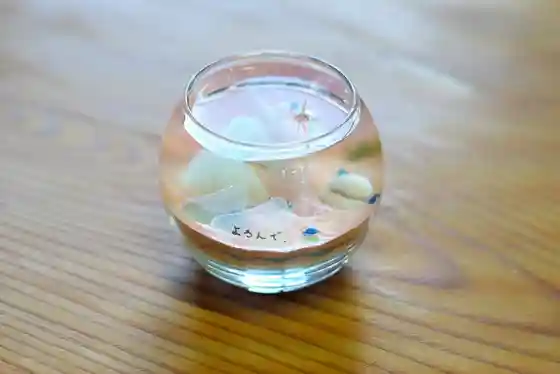
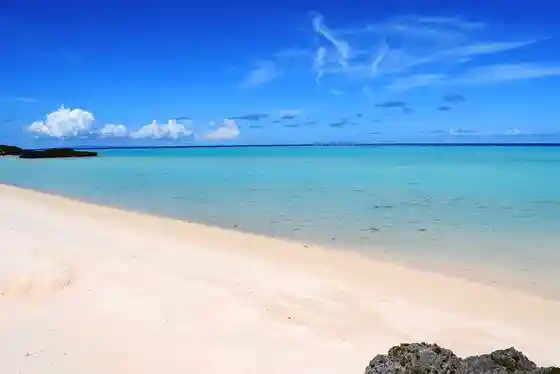

Yurigahama
Yoron, Kagoshima · 0997-97-5151 · Official / source link

Akasaki Coast Akasaki Fishing Port
Yoron, Kagoshima · 0997-97-5151 · Official / source link

Yunnu Taiken Kan
Yoron, Kagoshima · 0997-84-3661 · Official / source link

Taikin Kyu (Oganeku) Coast Campground
Yoron, Kagoshima · 0997-97-5151 · Official / source link

Yoron Minzoku Village
Yoron, Kagoshima · 0997-97-2934 · Official / source link
Udo no Su Beach
Yoron, Kagoshima · 0997-97-5151 · Official / source link
Yoron Castle Ruins (Kotohira Shrine)
Yoron, Kagoshima · 0997-97-5151 · Official / source link
Muuru (Muru)
Yoron, Kagoshima · 080-6410-3951 · Official / source link
Yoron Eki
Yoron, Kagoshima · 0997-97-5151 · Official / source link
Yoron B&G Kaiyo Center Teiko
Yoron, Kagoshima · 0997-97-5033 · Official / source link
Sazankurosu Center
Yoron, Kagoshima · 0997-97-3396 · Official / source link
Koraruei
Yoron, Kagoshima · 0997-97-5151 · Official / source link
Ken Haha (Kanebo) Beach
Yoron, Kagoshima · 0997-97-5151 · Official / source link
Yunnu Rakuen
Yoron, Kagoshima · 0997-97-2341 · Official / source link
Hato no Mizumi
Yoron, Kagoshima · 0997-97-5151 · Official / source link